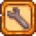
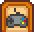

Options
| Getting Started |
The Player |
Options | Controls | Mobile Controls |
Health | Energy | Skills | Day Cycle |
There are two places to set Options in Stardew Valley:
 |
When creating a new game, click the wrench button at the bottom left of the new character creation screen to choose "Advanced Options" |
 |
Open the in-game menu, and choose the "Options" tab |
Advanced Options
Advanced Game Options
- Community Center Bundles: Normal/Remixed
- Modifies the bundles that appear in the Community Center
- Mine Rewards: Normal/Remixed
- Modifies the rewards that appear in the Mines
- Guarantee Year 1 Completable (checkbox)
- Ensures that the Traveling Cart will sell a Red Cabbage Seed at least once during the first year, allowing the player to restore the Community Center in Year 1.
- Spawn monsters on the farm (checkbox)
- Allows monsters to spawn at night
- Profit Margin: Normal/75%/50%/25%
- A multiplier applied to the price of items sold
- A multiplier applied to the price of seeds
- All fractional prices are truncated to the integer value, but never below
 1g.
1g.
Multiplayer Options
- Starting Cabins: None/1/2/3/4/5/6/7
- The number of starting cabins
- Cabin Layout: Nearby/Separate
- Whether the cabins are placed closer or further away from one another
Other Options
- Random Seed (text box)
- The seed used to randomize the game world, which determines some static things such as weather, the contents of items like Geodes and Mystery Boxes, the randomized stock of certain merchants, and more
- Use Legacy Randomization (checkbox)
- Make random choices in a way that often repeats patterns, using pre-1.6 randomization in some mechanics (e.g., clay placement, mushroom level allocation, etc).
In-Game Options
General
- Auto Run — Toggles whether the player will auto-run. The "Run" keybind can be held to perform the opposite. Default checked.
- Show Portraits — Toggle the portrait visibility and the name placement when interacted with normally (excludes dialogues that have multi-choices). If shown, the portrait appears to the right side of the dialogue with the name beneath. Otherwise, the name precedes the message, that is, <Name>: <Message>. Default checked.
- Show Merchant Portraits — Toggle the portrait visibility when interacted with as a merchant. Visibility and placements are similar to "Show Portraits" option. Default checked.
- Always Show Tool Hit Location — Toggle the visibility of the red-border that appears around tiles that will be affected by the tool. Default unchecked.
- Hide Tool Hit Location When Moving — Toggle the visibility of the red-border while moving. If checked, the visibility depends on the "Always Show Tool Hit Location" option. Default checked.
- Gamepad Mode — Toggle mode gamepad if you are using Xbox Series X/S, PS5, Switch, and other controllers. Drop-down options are: Auto-detect; Force On; Force Off. Default Auto-detect.
- Mouse Mode (Nintendo Switch 2 Edition) — Toggle whether to use mouse controls. Drop-down options are: Auto-detect; Force Off. Default Auto-detect.
- Item Stowing — Drop-down options are: Off; Gamepad Only; On. Pressing Use Tool while holding an item will stow it. Default Off, requires keyboard and/or controller.
- Slingshot Fire Mode — Change slingshot mode aims at the cursor position, and is fired by holding and releasing. Drop-down options are: Hold and release; Pull in opposite direction . Default Hold and release.
- Controller Placement Tile Indicator — Default checked, requires controller.
- Pause When Game Window Is Inactive — Toggles whether the game will pause whenever the game window loses focus. All audio and specific animations (e.g., the Journal button) will continue to play. Default checked.
- Use Controller-Style Menus — Cursor snaps to menus. Even without a controller plugged in, this will cause the cursor to snap to the top left of inventory when using the Shipping Box. Default checked.
- Show Advanced Crafting Information — Toggle to show more info on the crafting and cooking menus (including number of times crafted/cooked and the number of each ingredient available). Default unchecked.
Sound
- Music Volume — Slider for volume of music. Default 75%
- Sound Volume — Slider for volume of sound effects. Default 100%
- Ambient Volume — Slider for volume of ambient sounds. Default 75%
- Footstep Volume — Slider for volume of player character footsteps. Default 90%
- Fishing Bite Sound — Change sound fishing bite if you want. Drop-down options are: Default; 1; 2; 3; 4. Default Fishing Bite Sound
- Dialogue Typing Sound — Toggle whether typing of dialogue will be heard. If checked, the volume is affected by "Sound Volume". Default checked.
- Mute Animal Sounds — Toggle whether animal sounds will be heard. Default unchecked.
Graphics
- Window Mode — Drop-down options are: Windowed; Fullscreen; Windowed Borderless. Default Windowed Borderless.
- Resolution — Sets the resolution of the fullscreen window. Drop-down options relies on supported display modes of the default graphics adapter. Inactive if not fullscreen.
- Menu Backgrounds — Change menu background type. Drop-down options are: Standard (dims content behind the menu); Graphical (displays a static seasonal image); None. Default Standard.
- VSync — Toggle to synchronize the frame rate of the game with the monitor refresh rate for better stability. Disabling VSync may improve overall framerate at the expense of frame rate stability. Default checked.
- UI Scale — Decrease or increase the UI scale in increments of 5%. Default 100%, minimum 75%, maximum 150%.
- Lock Toolbar — Toggle whether the toolbar moves to the top of the screen when the player is near the bottom edge of any map. If locked, the toolbar loses opacity.
- Zoom Level — Decrease or increase the zoom level in increments of 5%. Default 100%, minimum 75%, maximum 200%.
- Zoom Buttons — Toggle whether the zoom level buttons appear beneath the day/time display in the upper right of the screen. Default unchecked.
- Snow Transparency — Slider for transparency of snow. Default 100%. Slide to the left to increase snow transparency. Slide to the right to decrease snow transparency.
- Show Flash Effects — Toggle whether effects (such as lightning) are visible. Default checked.
- Use Hardware Cursor — Toggle whether the game uses a sprite for the cursor. The hardware cursor will always be an arrow, even if hovering over doors or NPCs. Default unchecked.
Controls
Stardew Valley features Controller support with Rumble functionality.
- Controller Rumble — Default checked, inactive without controller.
- Invert Toolbar Scroll Direction — Toggle. If checked, scrolling down picks the item to the left and scrolling up picks the item to the right. Default unchecked.
- Reset Controls To Default — Reset all keybinds to default values. Does not ask for confirmation.
- Check/Do Action — Set the keybind for checking or doing some action such as: interacting with NPCs, Calendar, Help Wanted, doors, ladders and elevators; picking up an item from the bag slot; picking up forage and loot. Default Right-Click, X
- Use Tool — Set the keybind for using tools, or picking up forage and loot. With Item Stowing on, this keybind also stows held items. Default Left-Click, C
- Access Menu — Set the keybind for opening and closing the Menu (always opens to the Inventory tab). Default Escape, E
- Access Journal — Set the keybind for opening and closing the Journal. Default F
- Access Map — Set the keybind for opening and closing the Map. Default M
- Move Up — Set the keybind for moving the character up. Default W
- Move Left — Set the keybind for moving the character left. Default A
- Move Down — Set the keybind for moving the character down. Default S
- Move Right — Set the keybind for moving the character right. Default D
- Chat Box — Set the keybind for toggling the chat box. Default Question, T
- Emote Menu — Set the keybind for opening and closing the Emote Menu. Default Y
- Run — Set the keybind for running (if "Auto Run" unchecked) or walking (if "Auto Run" checked) while the key is held. Default LeftShift
- Shift Toolbar — Set the keybind for switching the toolbar to another row of the inventory. Default Tab
- Inventory Slot #1 — Set the keybind for selecting the first slot in the inventory and toolbar. Default 1
- Inventory Slot #2 — Set the keybind for selecting the second slot in the inventory and toolbar. Default 2
- Inventory Slot #3 — Set the keybind for selecting the third slot in the inventory and toolbar. Default 3
- Inventory Slot #4 — Set the keybind for selecting the fourth slot in the inventory and toolbar. Default 4
- Inventory Slot #5 — Set the keybind for selecting the fifth slot in the inventory and toolbar. Default 5
- Inventory Slot #6 — Set the keybind for selecting the sixth slot in the inventory and toolbar. Default 6
- Inventory Slot #7 — Set the keybind for selecting the seventh slot in the inventory and toolbar. Default 7
- Inventory Slot #8 — Set the keybind for selecting the eighth slot in the inventory and toolbar. Default 8
- Inventory Slot #9 — Set the keybind for selecting the ninth slot in the inventory and toolbar. Default 9
- Inventory Slot #10 — Set the keybind for selecting the tenth slot in the inventory and toolbar. Default 0
- Inventory Slot #11 — Set the keybind for selecting the eleventh slot in the inventory and toolbar. Default Minus
- Inventory Slot #12 — Set the keybind for selecting the twelfth slot in the inventory and toolbar. Default Plus
Screenshot
This feature is currently unavailable on Xbox.
Windows, Mac, and Linux
Clicking the camera button takes a screenshot of the entire map the player's character is currently in. The default zoom is 25% of original size, but can be changed via plus/minus buttons to 50%, 75%, or 100%. The default save location is:
- Windows: %appdata%\StardewValley\Screenshots
- Mac and Linux: ~/.local/share/StardewValley/Screenshots
- Flatpak: ~/.var/app/com.valvesoftware.Steam/.local/share/StardewValley/Screenshots
Clicking the screenshot button the first time creates a new folder called "Screenshots" and adds a button to open the folder directly from options.
Macs: note that due to a game bug, you may need to create the folder yourself. To do so, open the "Terminal" application and type mkdir -p ~/.local/share/StardewValley/Screenshots.
You can also use this feature with the chat command /mapscreenshot. The command will let you specify filename and percentage as well, for example /mapscreenshot image01 100.
PlayStation, Switch, and Mobile
Clicking the screenshot button takes a screenshot of the entire map the player's character is currently in. Screenshots are saved to the following locations:
- Switch: the Album page
- PS4: Settings > Storage > System Storage > Capture Gallery
- PS5: Settings > Storage > Console Storage > Media Gallery
- iOS and iPadOS: Files app > On My iPhone/iPad > Stardew Valley > StardewScreenshots
- Android: Pictures/StardewValley or Android/data/com.chucklefish.stardewvalley/files/Screenshots